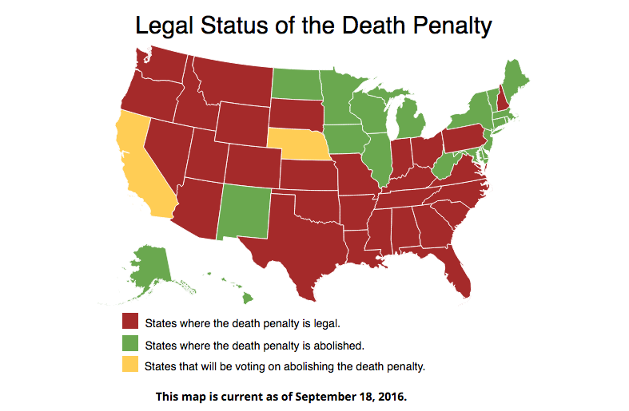

California Proposition 66, Death Penalty Procedures (2016)
On November 8th 2016, California will be holding a formal vote, to decide in whether to keep or abolish the current death penalty system. Proposition 66 states that the U.S or any given state should keep the death penalty system. Proposition 62, the opposing side of the argument sides with the fact that killing someone accused of crime is not justifiable, and should be abolished from all states.
Proposition 62 and 66
What are propositions?
Propositions are statements or govermential topics that express judgment or opinion. Whenever a new topic comes up about a certain law or establishment, another Proposition is made for that argument. Proposition 66 and 62 have not been the first votes about the death penalty. Proposition 7, in 1978 reinstated the California death penalty. Proposition 34, in 2012 was a vote to ban capital punishment, but got rejected by voters.
A Yes vote means that you support Prop 66, and that California does need a working death penalty system. A No vote inquires that you do not support the California death penalty system, and want it abolished. Prop 62 is the opposite. A Yes vote, declines California to use execution methods (death penalty), and a No vote supports the execution vote.
